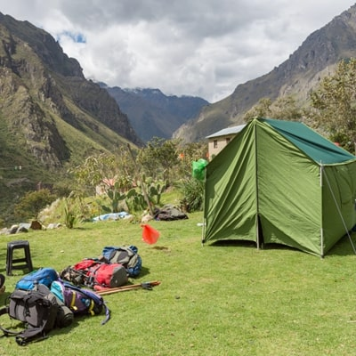

First night on the classic trail and the calm before Day 2’s high pass.

Wayllabamba (Huayllabamba) is the standard Camp 1 on the classic 4-day Inca Trail — end of Day 1 after the river section and first ruin views. Our elevation mark is about 9,650 ft (2,941 m).
It is often the last camp with a stronger sense of nearby community services before the trail commits harder toward Dead Woman's Pass on Day 2.
CAMP 1 · tour hash #camp-1.
Our interactive Mapbox tour follows GPS collected on the classic Inca Trail — fly through this stop and the full route to Machu Picchu.